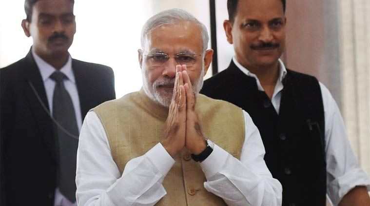

Prime Minister Narendra Modi .Prime Minister Narendra Modi on Friday addressed the Lok Sabha on the Constitution debate. The discussions are being held to commemorate the 125th birth anniversary of Dr BR Ambedkar.
Here are the highlights:
6:07 pm: LS Adjourned.
6:05 pm: ‘India first’ only religion of government and Constitution its only scripture, says Modi.
6:01 pm: The nation will run only according to the Constitution, says PM Modi in LS.
5:58 pm:
Grievance redressal systems give strength to a democracy: PM
@narendramodi
— PMO India (@PMOIndia)
November 27, 2015
5:58 pm: 800 million youngsters…what can be better than that. We have to create opportunities for them: PM
5:56 pm : Our focus must be on how our Constitution can help the Dalits, the marginalised and the poor: PM Modi.
5:49 pm: It is important to strengthen rights and it is as important to strengthen duties: PM
5:45 pm: Consensus more important than majority rule: PM Modi.
5:35 pm: In a democracy the real strength comes when we all walk on the path towards agreement: PM Modi
5:34 pm: For us the Constitution is becoming important by the day: PM Modi
5:28 pm: A mbedkar faced insults all his life, it colors a person’s intentions. But no where in Constitution does any of that reflect: PM
5:21 pm: If someone has to criticize Govt,or defend oneself or be neutral, all quote Baba Sb Ambedkar-PM Modi
5:20 pm: BR Ambedkar’s thoughts & teachings have been valid, true, & applicable to all generations, of any given time: PM in LS
5:18 pm : If Constitution simply becomes a document to be followed by the Govt then democracy will suffer, that’s why it needs to reach the roots: PM Modi.
5:15 pm: We need to consistently educate people about the strengths and importance of the constitution: PM Modi in LS.
5:13 pm: Dont remember any PM saying from the Red Fort that this nation is what it is due to contribution of all Govts & PMs: Modi.
5:12 pm: Our Constitution fulfills two principles of dignity and unity for Indians: PM Modi
5:08 pm:
A nation like India is diverse, and the Constitution has the power to bind us all: PM in LS
pic.twitter.com/fGfYKqPCHb
— ANI (@ANI_news)
November 27, 2015
5:06 pm: The spirit of this (Constitution) debate is not “you” or “I”, it is “We”: PM Narendra Modi
5:04 pm: I thank everyone for the interest shown in the Constitution debate and the support it got: PM Modi in LS
5:00 pm: PM Modi speaks in lok Sabha.
4:50 pm: Directive principles not enforceable: Sitaram Yechury in RS.
3:08 pm: Finance Minister Arun Jaitley had on Thursday said that the Prime Minister is willing to speak to everyone to get the landmark indirect tax law through.
3:07 pm: This assumes significance as the Government and the Congress are at loggerheads which is stalling the passage of crucial legislations like the Goods and Services Tax (GST) Bill.
2:50 pm: PM Modi to meet Sonia Gandhi and Manmohan Singh at 7 pm at PM’s residence at RCR. Arun Jaitley will be present too.
1.00 pm: ‘Intolerance is your inability to recognise Pt Nehru’s contribution’
In his response to Arun Jaitley, Leader of the Opposition in Rajya Sabha Ghulam Nabi Azad said Jaitley’s inability to recognise Pt Nehru’s contribution to India was a sign of ‘intolerance’.
“Preamble starts with Pandit Nehru’s ‘objectives’ and you are not taking his name? This is what is called intolerance. This is the intolerance, that we are not able to recognise the contribution of the first PM of India. Intolerance grows from top and percolates down,” Azad said, adding, “ Nehru ko, Subash Chandra Bose ko, Sardar Patel ko ladaya ja raha hai, rajneeti ke liye. Apna to koi leader tha nahi .”
12.10 pm: Jaitley speaks of Hitler in 1933… or Indira’s Emergency?
Leader of Rajya Sabha Arun Jaitley in a veiled attack on the Congress party spoke of how “there are illustrations in history when Constitutional orders were used to subvert a Constitutional order.”
In a very guarded statement, Jaitley spoke of how one doesn’t need a military dictatorship to subvert a country’s constitution referring to what happened in Germany in the early 1930s.
“You don’t need a military dictatorship. There are illustrations in history and of those, the most glaring example is what happened in Germany in 1933. Constitutional provisions were used to subvert democracy,” Jaitley said.
“A constitution and its provisions were used to subvert democracy during the Third Reich in Germany. You imposed Emergency, detain Opposition leaders (to get the required numbers), censored newspapers, and brought into force a 25-point economic programme,” Jaitley, said, adding that “we need to be reminded of our history.”
While the above statement clearly sounded like India in the 1970s, Jaitley went further and spoke of the Ninth Schedule brought about to protect legislation within it from judicial review.
Jaitley then went on to speak of Rudolf Hess’ sycophancy for Hitler where he declared “Adolf Hitler is Germany and Germany is Adolf Hitler.”
In India, one remembers Congress leader and former party president Dev Kant Barooah who declared, “India is Indira, Indira is India.”
Jaitley, however, stopped short of drawing any comparison: “I must say I’m just referring to what happened in 1933. What happened subsequently in other parts of the world the Germans never claimed copyright on that.”
11.55 am: Jaitley speaks about terrorism, hints at martyr status to Yakub Memon
“We need to confront terrorism. When convicts in terror attacks were being punished, some portrayed them as martyrs. He virtually massacred Bombay. How would have Dr. Ambedkar reacted to this?” Jaitley said.
11. 35 am: Constitution envisaged by Ambedkar rejected theocracy, says Jaitley
Speaking in Rajya Sabha, Jaitley said: The Constitution as envisaged by Dr Ambedkar, was not anti or pro-religion, it rejected theocracy. Article 25 said, every man has a right to practice and propagate their religion, what do we conclude from this? The Constitution envisaged by Dr. Ambedkar has said that that the State will not discriminate on the basis of religion.
11.15 am: In Rajya Sabha, Jaitley speaks of Article 21
“Life and liberty cannot be denied to anyone,” Leader of the House (Rajya Sabha) Arun Jaitley said, speaking of how Article 21 was suspended during the Emergency period in the 70s. “This was dictatorship at its worst,” Jaitley said, while initiating the discussion on the Indian Constitution.
“Fundamental rights should never be so easily interfered with,” Jaitley said. He also spoke of how now the country is in a much better place given that Article 21 can no longer be suspended.
“Today someone comes up on the TV and makes a statement and it becomes an issue of ‘intolerance’,” he said.
Speaking on the role of the judiciary, Jaitley said, the independence of judiciary was a part of the basic structure of the Constitution.
11.05 am: Jyotiraditya Scindia seeks apology from Minister Gehlot
Congress MP Jyotiraditya Scindia began the proceedings by seeking an apology from the treasury bench over Social Justice and Empowerment Minister Thawar Chand Gehlot controversial statement: “Former Prime Minister Rajiv Gandhi and Indira Gandhi were assassinated because of the wrong policies of the Congress.”
Naidu promised to have the Member clarify his statement as soon as he enters the House.
11.00 am: Ratlam MP Kantilal Bhuria takes oath
Newly-elected Ratlam MP Kantilal Bhuria took oath of office in Lok Sabha. This is his fifth term as Member of Parliament.
10.10 am: PM Modi invites Sonia, Manmohan Singh for tea
It appears Prime Minister Modi is willing to go the extra mile to ensure the GST Bill sails through in this session of Parliament.
Seeking a non-disruptive session, PM Modi has invited Congress President Sonia Gandhi and former Prime Minister Manmohan Singh to tea this evening where he is likely to discuss key pending legislation including the GST bill.
Confirming the invite, Parliamentary Affairs Minister Venkaiah Naidu said: “Prime Minister Narendra Modi has requested Sonia Gandhiji and Dr. Manmohan Singhji to join him over tea and discuss issues regarding bills pending in Parliament.”
9.55 am: Will discuss GST with Congress today, says Naidu
On the contentious GST Bill, Parliamentary Affairs Minister Venkaiah Naidu said he’s hopeful that a discussion with the Congress party today will bear some fruit and the government will be able to pass the legislation soon.
“We are in touch with Congress. There will be some discussions (on GST) today, we are confident we’ll be able to come to some sort of agreement,” Naidu told news agency ANI.
9.45 am: Prime Minister Modi likely to conclude discussion on Constitution Day
Union Minister for Parliamentary Affairs M Venkaiah Naidu said Prime Minister Modi will intervene in the on-going debate.
In Rajya Sabha, leader of the House Arun Jaitley will initiate the discussion which will conclude on Monday. The House did not function on Thursday following the demise of its member Khekiho Zhimomi.
In LS, PM will intervene and conclude debate on ‘Commitment to the Constitution’ today:Venkaiah Naidu #WinterSession pic.twitter.com/nA50bvotRZ
— ANI (@ANI_news) November 27, 2015
9.00 am: Congress Parliamentary Affairs Committee to meet this morning
The Parliamentary Affairs Committee within the Congress’s Parliamentary Party will meet this morning to chalk out their strategy for the ongoing session. This, amid reports that Prime Minister Narendra Modi could participate in the discussion on the Constitution, today.